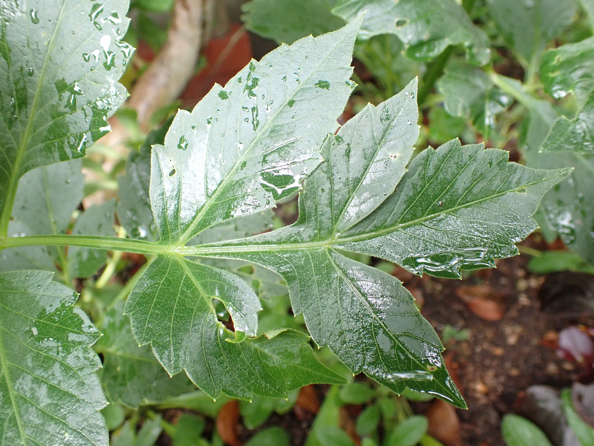
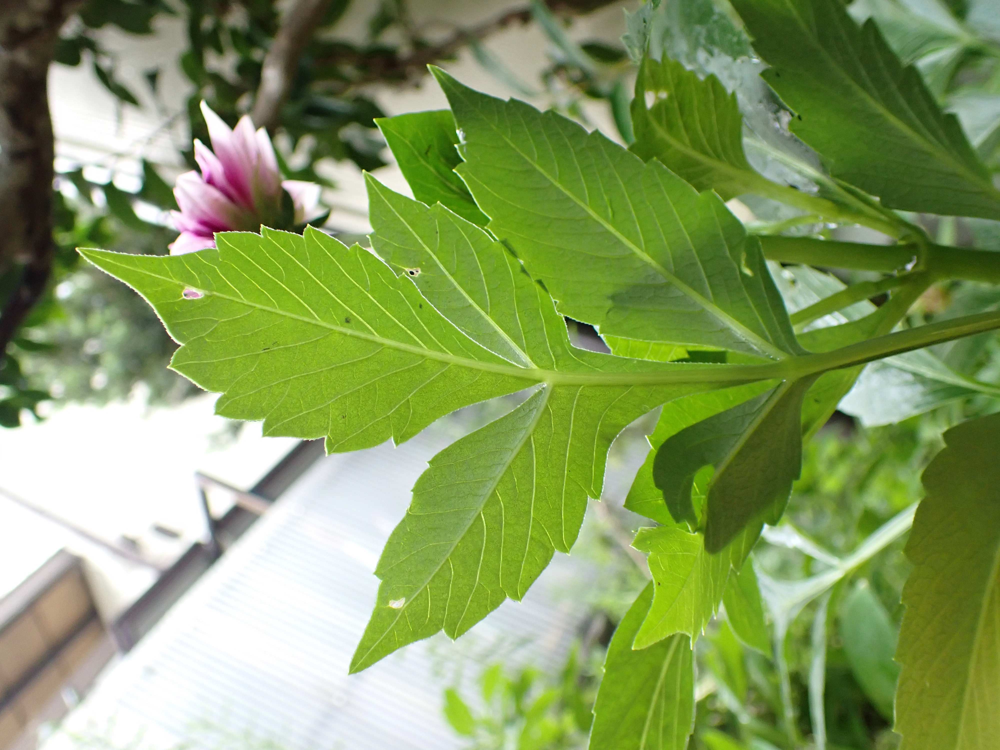

キク科
Written on
2020年06月14日
ダリア
園芸種
Dahlia pinnata
キク目 キク科 ダリア属
多年生 球根
原産地：メキシコ
江戸時代にオランダを経由して持ち込まれた。花色や花容が豊富である。花色のうち、青色と緑色はない。
開花時期は初夏から秋にかけて、最盛期は７月である。
球根の場合は、春に植える。実生から育てる場合は４月中旬頃に種まきをする。種から育ててもその年に咲き、来年からは球根で育てることができる。
メキシコの高い土地が原産地のため、暑さに弱い。
花言葉：「華麗」「優雅」「移り気」
【実家の庭に咲いていた。去年植えたもので、今年は何もしないで咲いていたという。球根から自然と育ったのだろう。色が綺麗だったので写真を撮った。ダリアとガーベラの区別さえまだイマイチだ。ダリアと聞くと、皇帝ダリアをまっさきに思い浮かべる。最初に覚えたダリアは皇帝ダリアなのだろう。】


2020年06月07日
ノゲシ
野草
Sonchus oleraceus
キク目 キク科 ノゲシ属
１年草または２年草
帰化植物（ずっと昔の）
原産地：ヨーロッパ
和名に「ケシ」が付くが、ケシ（ケシ科）と葉が似ているだけで分類上は全く別系統である。 アザミに葉は似るが、花が黄色である。日本各地の道端や畑に自生する。
【道端や広場で昔からよく見る。小さい頃は、この花の種で花占いをしていた記憶がある。】